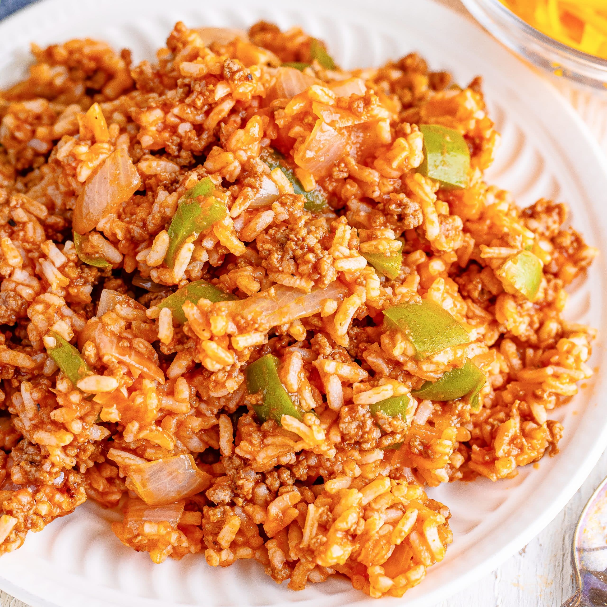

Ingredients

- 1 tbsp oil
- 2 cups long grain enriched rice
- 1/2 large onion (chopped)
- 1 can kidney beans (washed and drained)
- 1 medium bell pepper (chopped)
- 1/2 tsp garlic powder
- 1/2 tsp oregano
- Salt to taste
- 8 oz can tomato sauce
- 3 cups broth
- Cilantro or green onions to garnish
Instructions
- Heat oil in nonstick pan on medium heat.
- Add rice and saute until rice is light golden brown.
- Add onion and saute 1-2 minutes.
- Add kidney beans, bell peppers, garlic powder, salt, oregano, tomato sauce, and broth; mix well.
- Allow the mixture to come to a boil, stir gently, and turn the stove down to simmer; cover the pan and cook for 15 minutes.
- Turn off gas and fluff up rice gently with a fork.
- Garnish with green onions or cilantro.